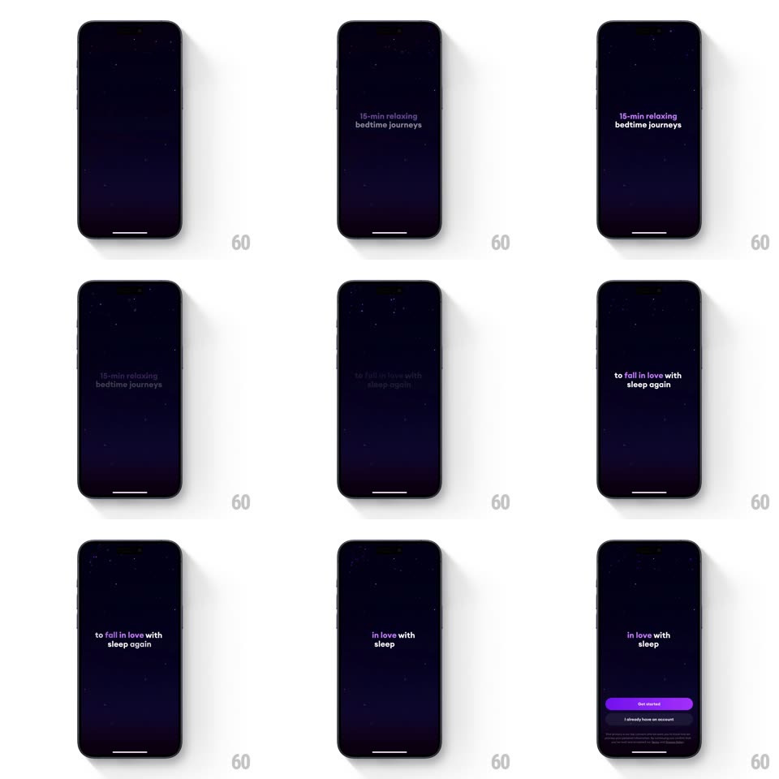

Media
Frame-by-frame

Rebuild this interaction 1:1: Loona's intro - over a starry indigo night, the loona wordmark fades out and short phrases scale and fade in sequence ("15-min relaxing bedtime journeys", "to fall in love with sleep again"), resolving into "in love with sleep" above a purple Get started button.

Rebuild this interaction 1:1: Loona's intro - over a starry indigo night, the loona wordmark fades out and short phrases scale and fade in sequence ("15-min relaxing bedtime journeys", "to fall in love with sleep again"), resolving into "in love with sleep" above a purple Get started button.
## Integration
Integration: stack-agnostic spec - springs given as stiffness/damping, timed motions as duration + curve; map every value to your framework and animation library of choice.
## Scene
Dark indigo gradient sky, sparse stars: centered serif phrases with italic lavender keywords; final state adds a purple "Get started" pill and a quiet "I already have an account" link.
## Motion spec
Pattern: auto-playing typographic lullaby.
- The wordmark holds ~1s, then fades as it scales down slightly (0.95, 500ms).
- Each phrase enters at scale 0.92 + 8px rise, fades in (600ms, ease-out), holds ~1.4s, and exits scaling up to 1.05 while fading (500ms) - a slow zoom-through, like drifting past the words.
- Italic keywords ("bedtime journeys", "sleep again", "sleep") carry the lavender accent; the rest is soft white.
- Between phrases a beat of near-black (~200ms) - the screen breathes.
- Finale: the last phrase settles smaller at top as Get started slides up (spring ~320/24) and the account link fades in; stars twinkle throughout (opacity 0.3 <-> 0.9, 3s).
## Calibration
- One phrase at a time - never stacked; this is pacing, not information density.
- The whole sequence runs ~8s and loops nothing.
## Reduced motion
Phrases crossfade in place; no scale drift.
## Don't miss
- The through-zoom: enter small, exit large - it pulls the viewer forward through the copy.
- The keyword italics swap per phrase but always in the same lavender.